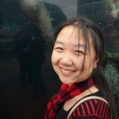

About
 I am a PhD candidate in Applied Mathematics at Northwestern University, Evanston, IL. I work on mathematical models applied to social systems. Some topics of my work include crime in cities and dynamics of political elections. The methods I use are often a combination of differential equations, numerical simulations, and learning from data. Prior to joining Northwestern, I worked on mathematical models applied to heat transfer and microwave chemistry.
Outside of academics, I enjoy dance, photography, and Aikido. I co-founded and is the president of NuTango, Northwestern University’s Argentine Tango Club. I am also the president of Society for Industrial and Applied Mathematics’s Northwestern Chapter.
News
- Oct 2016 - Attend Grace Hopper Celebration of Women in Computing
- Aug 2016 - Attend Communicating Science Chicago
- July 2016 - Attend the SIAM Annual Meeting, Boston, MA.
- June 2016 - Present at the Computational Social Science Conference, Evanston, IL.
- April 2016 - Co-organize Chicago Area SIAM Student Conference, Chicago, IL.